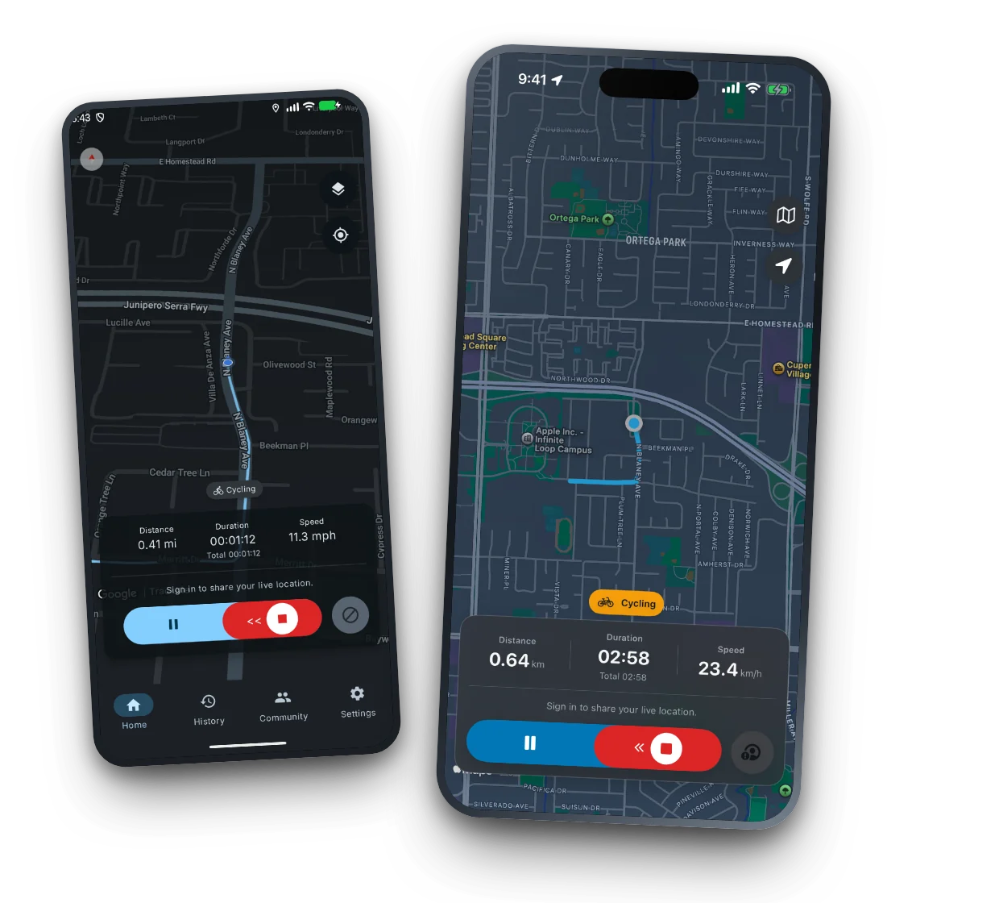

Records with nothing
No signal and no account. Route, distance, duration, pace and elevation gain are computed on the device and saved there the moment you press start.
Private outdoor tracking
Ride, run, hike or walk. TrackMe records your trail with no connection and no account — free, with nothing to unlock and nothing to cancel. Take every route home as GPX whenever you like.

Made for the miles ahead
No feed, no coach, no streak to protect. A recorder that works where you actually go, and gives everything back when you ask.
No signal and no account. Route, distance, duration, pace and elevation gain are computed on the device and saved there the moment you press start.
Send a live link someone opens in a browser with no app and no account. Or ride as a group and see each other on one map. Both need an account and a connection.
Any ride as GPX, the whole history as a ZIP, imports from the tools you already use, and account deletion that takes every cloud record with it.
A look inside
Real screens from the shipping 1.8.7 build on Android and iPhone — nothing staged. Auto-playing; use the dots to jump around.
No asterisks
Most tracking apps are vague about this. Here is the whole truth in two columns.
Recording your own trail. Route, distance, duration, pace and elevation gain, computed on the device and saved there. History, ride detail, charts, GPX export and import, and the ride-image export all work signed out.
Live share, group rides, and cloud backup. These talk to a server, so they need both. The person watching your live link needs neither — they just open it in a browser.
Map imagery comes from the map provider, so the basemap can be blank where you have no signal. Your route is recorded either way.
Community pulse
Last updated just now. Cache valid until the next 6h cycle.
Your data has an exit door
TrackMe records to your device first. Cloud sync is something you switch on, not something you opt out of — and whatever ends up there, you can take out or destroy in a couple of taps.
Read the privacy policyStay on the route
Get an occasional note when TrackMe ships something useful. No newsletter spam, no sharing your address. Sent securely via Resend EU; we store only a one-way hash locally.
Start where you are
TrackMe is live on Google Play and the App Store. Install it from either store below; the release history under each tab is generated from the actual published releases.
TrackMe for Android is available to everyone on Google Play. Download or open the store listing directly.
TrackMe for iPhone and iPad is available on the App Store. Download or open the store listing directly.
Need a hand?
Start with the common questions below. For account-specific help, sign in and use the feedback form in your account area.
Recording does, completely. Start a ride with no signal and no account — route, distance, duration and pace are computed on the device and saved there. Live share, group rides and cloud backup each need an account and a connection. Map imagery comes from the map provider, so the basemap may be blank where you have no signal; your route is recorded either way.
No. They open a link in any browser, with no app and no account. Starting the share needs an account and a connection on your side.
Anyone you give the link to can view the public location page until the session expires. Only the signed-in owner can start, update, or stop that session.
Yes. Signed-in users can request a tokenized ZIP containing their profile, ride history, and GPX traces from the Account section.
Email TrackMe support or sign in and include details in the account feedback form.
Your account
Sign in to request your archive, manage your account, or send account-specific feedback.
Your account
Welcome, Explorer ().
Request your profile, ride history, and GPX traces as a tokenized ZIP assembled from your own Firestore data.
Delete your account and associated cloud data. This cannot be undone.